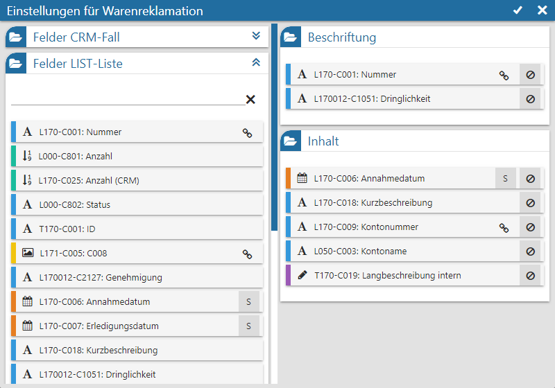
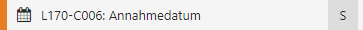
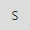
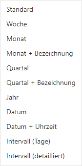

Durch Anwahl des Icons gelangt man in die Widget-Einstellungen des jeweiligen Workflows. Hier kann der Inhalt der Kachel definiert werden.
Hinweis
Die hier getätigten Einstellungen sind unabhängig von der verwendeten Liste und beziehen sich direkt auf den Workflow.

Ø Tabelle "Felder CRM-Fall" / "Felder LIST-Liste"
In diesen Tabellen werden alle Felder der CRM-Fall-Tabelle und der WinLine LIST-Liste dargestellt, welche per Drag & Drop in die Tabellen "Beschriftung" und "Inhalt" übergeben werden können. Der CRM Kanban unterscheidet hierbei nach den folgenden Datentypen:
ü - Alphanumerisch
Es handelt sich um ein
Feld mit alphanumerischen Inhalt.
ü - Text
Es handelt sich um ein Feld mit
Langtext.
ü - Bild (Grafik)
Es handelt sind um ein
Feld mit einem Bild als Inhalt.
ü

- Datum
neben der Beschreibung des Felds angeklickt werden, wodurch sich die folgende Auswahl öffnet:
Hinweis
Der "Intervall" stellt die Zeitspanne zwischen Systemdatum und dem Datum des Datenfelds da.
ü - Zahl (Measure)
Es handelt sich um ein
Feld mit numerischen Inhalt.
Hinweis
Mit Hilfe der Suchzeile kann über eine Volltextsuche nach Datenfeldern gesucht werden, wobei das %-Zeichen als Platzhalter verwendet werden kann.
Achtung
Die hier getätigten Einstellungen werden pro Workflow gespeichert! Sollten Datenfelder aus dem Bereich "Felder LIST-Liste" verwendetet werden, so muss sichergesetllt werden, dass die Felder in allen Listen, in welchen der Workflow vorkommt, vorhanden sind (ansonsten ist die Anzege in der Widget-Kachel ggfs. leer).
Ø Tabelle "Beschriftung"
In dieser Tabelle werden jene Felder zugewiesen, welche in der Widget-Kachel als Beschriftung (Überschrift) dargestellt werden sollen (maximal 2 Felder sind möglich).
Ø Tabelle "Inhalt"
In dieser Tabelle werden jene Felder zugewiesen, welche innerhalb der Widget-Kachel als Inhalt (Beschreibung) dienen sollen (maximal 10 Felder sind möglich).
Buttons
Ø Ok
Durch Anwahl des Buttons "Ok" bzw. des Taste F5 werden die Einstellungen gespeichert, angewendet und das Fenster geschlossen.
Ø Ende
Durch Anwahl des Buttons "Ende" bzw. der Taste ESC wird das Einstellungsfenster geschlossen und nicht gespeicherte Änderungen verworfen.